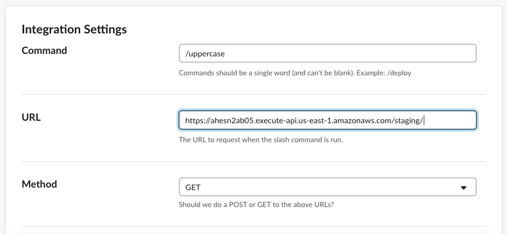
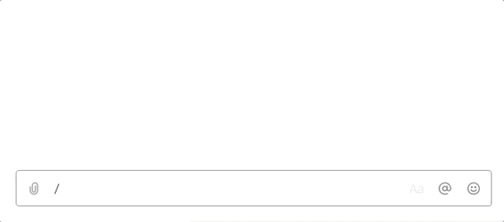
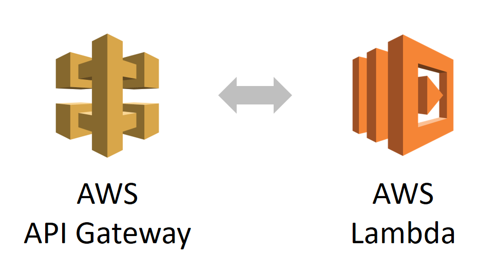
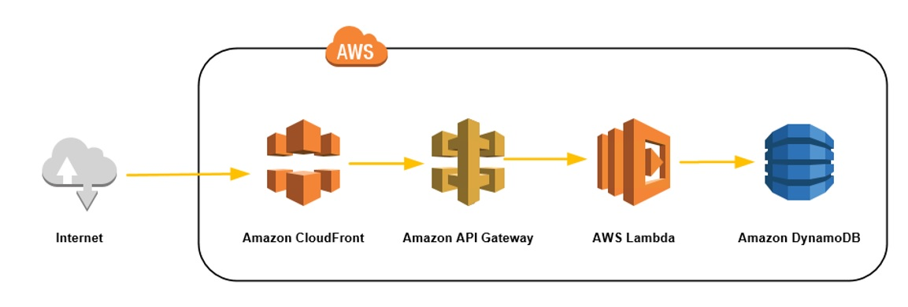

Serverless Lessons
Running a startup 100% on Serverless
Tal Bereznitskey
Co-Founder and CTO
SaaS Management Platform
built entirely on serverless
🤖
1 Minute Slack bot
Code - the upper-bot
const app = require('express')
app.get('/', (req, res) => {
const { text = '' } = req.query
const uppercase = text.toUpperCase()
res.send('Your uppercase text is ' + uppercase)
})
app.listen(process.env.PORT)Deploy
$ up
build: 175 files, 7.4 MB (662ms)
deploy: staging (commit c6f180c) (25.522s)
stack: complete (14.198s)
endpoint: https://2ab05.execute-api.us-east-1.amazonaws.com/staging/
Test
$ curl https://...amazonaws.com/?text=command-line-test
Your uppercase text is COMMAND-LINE-TEST
Configure Slack

Result

What just happened?
up
What did we get?
- Highly available Slack bot
- Scales from 0 to Infinity
- Pay per use
- No server management
- Awesome Developer Experience!
🆒
but can serverless be used for “real” work ?
Will serverless work for our startup?
Why choose serverless?
Minimum ops
Focus on delivering more value
Advantage over competition
Win
... while sleeping better at night
Serverless @ Torii
API Server(s)
Background jobs
Static content
👨🏫
LESSONS LEARNED
Best Practices Out-Of-The-📦
- Immutability
- Versioning
- Aliases
- Zero downtime deployments
- Instant Rollbacks
Infrastructure-as-Code
Friendly tools, even I can do it...
service: scheduled-cron-example
functions:
cron:
handler: index.handler
events:
# Invoke Lambda function every minute
- schedule: rate(1 minute)Better Security
Automatic OS and runtime security patches
Permissions per function
SSH is dead, less attack vectors
Easier certification
Limits
15 minute max run time. Recursive invocations.
30 sec max API Gateway responses. Decoupled invocation.
No persistent servers, websockets, polling. There's a service for that.
Performance - Cold starts

Optimizing Functions
A lambda function is similar to a website
- Bundle using Webpack
- Remove useless files
- Bundle + Remove
- Lazy load code
- Open source:
ncc, pkg, lambdapack
Performance - Latency
Scaling
Functions can scale, can the rest keep up?
Limit concurrency
One Function vs. Many
Many small functions or just a large one?
API servers are better as one large function
Less cold starts, easier to deploy and test
Secrets
AWS Systems Manager Parameter Store (SSM)
Decrypt at runtime. Doesn't scale well.
Bake it during deployment
Logging
Loggers were intended for always running servers
Who ❤️ CloudWatch?
Lambda 👉 CloudWatch 👉 Lambda 👉 Papertrail
Actively Improving
We're just at the beginning
Cloud providers are investing a lot in serverless
Since most infra is on AWS, it keeps improving
- 30 seconds 👉 5 mins 👉 15 mins
- Node v6 👉 Node v8 👉 any version
- Faster VPN cold starts
- Websockets, SQS, ALB support
Is serverless the future?
No. It's the present.
Tal Bereznitskey
- Works: Co-Founder and CTO at Torii
- Codes: github.com/berzniz
- Tweets: @ketacode
- Writes:
medium.com/ketacode
ketacode.com
berzniz.com